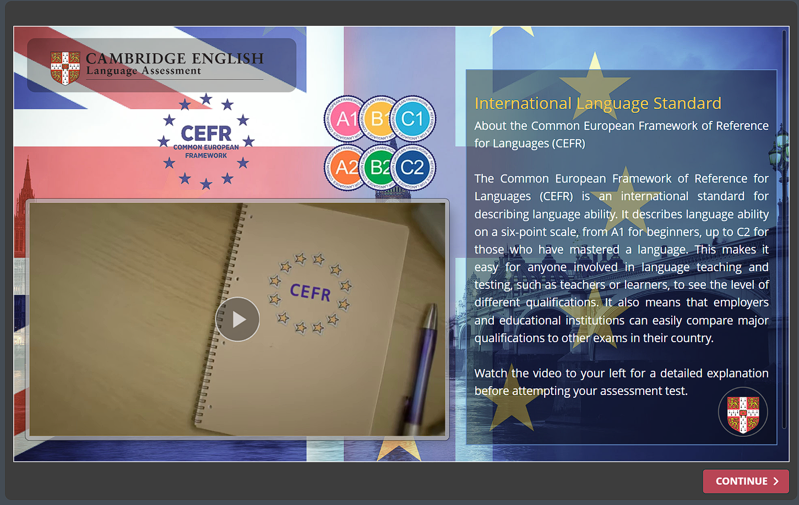
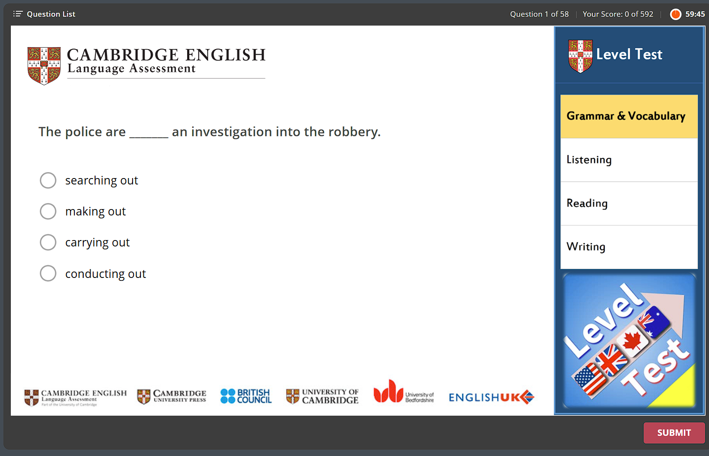

Giới Thiệu Cambridge English Placement Test
Sáng Tạo Từ ParagonCoder – Đội Ngũ Kỹ Thuật Hàng Đầu Của IVS JSC
Website sẽ tự động chuyển đến Fanpage IVS Academy trong 2 phút 0 giây...
Nền Tảng Đánh Giá Trình Độ Tiếng Anh Theo Chuẩn CEFR
Cambridge English Placement Test (CEPT) là một nền tảng trực tuyến tiên phong, giúp người học trên toàn thế giới kiểm tra trình độ tiếng Anh một cách chính xác và thuận tiện. Được thiết kế để hỗ trợ người học đánh giá năng lực ngôn ngữ theo Khung Tham chiếu Ngôn ngữ Chung Châu Âu (CEFR), CEPT mang đến trải nghiệm kiểm tra toàn diện với các bài kiểm tra nghe, đọc và đánh giá tổng quát.
Kết quả bài kiểm tra sẽ giúp người học xác định chính xác cấp độ tiếng Anh của mình, từ đó xây dựng lộ trình học tập phù hợp. Không chỉ dừng lại ở việc kiểm tra, CEPT còn cung cấp các bài học và bài kiểm tra bổ sung, hỗ trợ người học cải thiện kỹ năng tiếng Anh một cách hiệu quả.
ParagonCoder – Bộ Óc Đằng Sau Nền Tảng
Đứng sau sự thành công của Cambridge English Placement Test là ParagonCoder, nhóm phát triển do Rachid Belfarar, Giám đốc Kỹ thuật và Ứng dụng, Kỹ sư Công nghệ số của IVS JSC, dẫn dắt. Với kinh nghiệm dày dặn trong lĩnh vực công nghệ số và niềm đam mê đổi mới giáo dục, ông Rachid đã cùng đội ngũ của mình xây dựng một nền tảng đáp ứng các tiêu chuẩn quốc tế, mang lại trải nghiệm mượt mà và hiệu quả cho người dùng.
ParagonCoder đã tích hợp các công nghệ tiên tiến vào CEPT, từ giao diện người dùng (UI/UX) tối ưu, hệ thống đánh giá thông minh, đến khả năng xử lý dữ liệu nhanh chóng và chính xác.
Đội Ngũ Lãnh Đạo Và Phát Triển Của IVS JSC
Cambridge English Placement Test là sản phẩm của sự hợp tác chặt chẽ giữa các chuyên gia hàng đầu tại IVS JSC:
Ông Nguyễn Minh Triết
Chủ tịch HĐQT kiêm Tổng Giám đốc IVS JSC, đồng thời là Giám đốc điều hành IVS Academy.
Ông Rachid Belfarar
Giám đốc Kỹ thuật và Ứng dụng, Kỹ sư Công nghệ số, ParagonCoder.
Bà Salma Mahzoum
Giám đốc R&D Giáo trình, phụ trách giảng dạy.
Tại Sao Nên Chọn Cambridge English Placement Test?
- Chính xác và đáng tin cậy: Được phát triển dựa trên chuẩn CEFR, CEPT cung cấp kết quả đánh giá chính xác.
- Dễ sử dụng: Giao diện thân thiện, hỗ trợ trên nhiều thiết bị, từ máy tính đến điện thoại di động.
- Hỗ trợ học tập toàn diện: Gợi ý lộ trình học tập và các bài kiểm tra bổ sung để cải thiện kỹ năng.
- Đội ngũ phát triển chuyên nghiệp: Được thiết kế bởi ParagonCoder và đội ngũ kỹ sư hàng đầu của IVS JSC.
- ĐẶC BIỆT HOÀN TOÀN MIỄN PHÍ
Hướng Dẫn Sử Dụng Cambridge English Placement Test (CEPT)
Dưới đây là hướng dẫn chi tiết từng bước để bạn sử dụng CEPT một cách hiệu quả:
BƯỚC 1: Truy Cập, Đăng Nhập Đơn Giản
Truy cập trang này:
- Kéo xuống bạn sẽ thấy nút "Trải nghiệm ngay" màu đỏ, Nhấp vào đó.
- Bạn sẽ thấy giao diện chính của CEPT với dòng chữ "Cambridge English Language Assessment - English Level Placement Test" và nút "Start Test".
Nhập thông tin cá nhân:
- Nhấn vào nút "Start Test".
- Một cửa sổ sẽ hiện ra yêu cầu bạn nhập thông tin cá nhân:
- Họ và tên: Ví dụ, "Nguyen Minh Triet".
- Email: Ví dụ, "ivscorp.vn@gmail.com".
- Sau khi điền đầy đủ, nhấn "Submit" để tiếp tục.
BƯỚC 2: Tìm Hiểu Về CEFR Và Hướng Dẫn
Xem thông tin về CEFR:
- Sau khi nhấn "Submit", bạn sẽ được chuyển đến màn hình giới thiệu về CEFR (Common European Framework of Reference for Languages).
- Màn hình này giải thích CEFR là gì và các cấp độ tiếng Anh (A1, A2, B1, B2, C1, C2). Bạn có thể xem video hướng dẫn bằng cách nhấn vào nút Play ở giữa màn hình.
- Đọc kỹ nội dung để hiểu cách CEPT sẽ đánh giá trình độ của bạn.
Tiếp tục:
- Sau khi xem xong, nhấn nút "Continue" ở góc dưới bên phải để bắt đầu bài kiểm tra.
BƯỚC 3: Làm Bài Kiểm Tra
Hiểu cấu trúc bài kiểm tra:
- CEPT bao gồm các phần: Grammar & Vocabulary, Listening, Reading, và Writing.
- Bài kiểm tra có tổng cộng 58 câu hỏi, và bạn có 60 phút để hoàn thành.
- Các câu hỏi sẽ bắt đầu từ dễ đến khó, giúp hệ thống đánh giá chính xác trình độ của bạn.
Đọc hướng dẫn chi tiết:
- Trước khi bắt đầu, bạn sẽ thấy màn hình "Test Instructions":
- Bài kiểm tra sẽ đánh giá kỹ năng tiếng Anh tổng quát (ngữ pháp, từ vựng, nghe, đọc, viết).
- Một số câu hỏi liên quan đến tiếng Anh thương mại (Business English).
- Câu hỏi sẽ khó dần, vì vậy hãy làm cẩn thận.
- Kết quả sẽ được so sánh với chuẩn CEFR (A1 đến C2).
- Bạn cần đọc kỹ câu hỏi, chọn đáp án đúng và nhấn "Submit" để xác nhận.
- Sử dụng Question List ở góc trên bên trái để chuyển đổi giữa các câu hỏi.
Làm bài:
- Ví dụ: Câu hỏi đầu tiên có thể là: "The police are ______ an investigation into the robbery."
- Các lựa chọn bao gồm: searching out, making out, carrying out, conducting out.
- Chọn đáp án đúng (trong trường hợp này là carrying out) và nhấn "Submit".
- Tiếp tục làm các câu hỏi tiếp theo. Bạn có thể chuyển đổi giữa các phần (Grammar & Vocabulary, Listening, Reading, Writing) bằng menu bên phải.
Quản lý thời gian:
- Thời gian còn lại được hiển thị ở góc trên bên phải (ví dụ: 59:45).
- Hãy phân bổ thời gian hợp lý để hoàn thành tất cả các câu hỏi trong 60 phút.
BƯỚC 4: Hoàn Thành Và Xem Kết Quả
Hoàn thành bài kiểm tra:
- Sau khi trả lời hết 58 câu hỏi hoặc hết thời gian, hệ thống sẽ tự động kết thúc bài kiểm tra.
- Bạn sẽ nhận được thông báo hoàn thành và kết quả sẽ được hiển thị.
Xem kết quả:
- Kết quả sẽ cho biết trình độ tiếng Anh của bạn theo chuẩn CEFR (ví dụ: B2, C1, v.v.).
- Bạn cũng sẽ nhận được gợi ý lộ trình học tập và các bài kiểm tra bổ sung để cải thiện kỹ năng.
Lưu và chia sẻ:
- Kết quả có thể được lưu vào email bạn đã đăng ký.
- Bạn cũng có thể chia sẻ kết quả với giáo viên hoặc nhà tuyển dụng nếu cần.
Một Số Lưu Ý Quan Trọng
Chuẩn bị trước khi làm bài:
- Đảm bảo bạn có kết nối internet ổn định.
- Sử dụng tai nghe nếu làm phần Listening để nghe rõ hơn.
- Làm bài ở nơi yên tĩnh để tập trung.
Khi làm bài:
- Đọc kỹ câu hỏi và các lựa chọn trước khi trả lời.
- Nếu không chắc chắn, bạn có thể bỏ qua và quay lại sau bằng cách sử dụng Question List.
- Không làm bài hộ người khác, vì kết quả sẽ không phản ánh đúng trình độ.
Sau khi làm bài:
- Xem kỹ gợi ý học tập từ CEPT để cải thiện kỹ năng.
- Nếu muốn làm lại bài kiểm tra, bạn có thể đăng ký một lần kiểm tra mới sau 24 giờ.
Bắt Đầu Hành Trình Nâng Cao Trình Độ Tiếng Anh Ngay Hôm Nay!
Hãy truy cập ngay để trải nghiệm Cambridge English Placement Test.
Trải Nghiệm Ngay